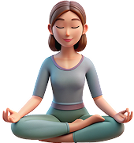
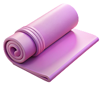

Смачний PDF-гайд "5 легких рецептів здорового харчування на
кожен день"
Збалансовані та прості у приготуванні вегетаріанські страви, які
наповнять ваше життя легкістю та зарядять енергією

Змістовне відео "Дихальні практики для початківців"
Навчіться правильному диханню, яке допоможе вам розслабитися,
покращити концентрацію та отримати ще більше користі від
практики йоги та у щоденному житті

Чек-лист "Екологічний підхід до практики йоги" Як
зробити свою практику більш усвідомленою: вибір килимка,
екологічного одягу та мінімізація відходів
Встигніть зареєструватися
:
:
цей курс
для тих:
У КОГО НЕМАЄ ЧАСУ НА ТРЕНУВАННЯ
Якщо вам здається, що заняття йогою потребують багато часу, сил
і спеціальної підготовки, цей курс змінить вашу думку
Гнучкий графік — займаєтесь коли зручно
М’яке занурення без перевантажень
Лише 10 хвилин на день
ХТО ВІДЧУВАЄ НАПРУГУ І СТРЕС
Якщо ви постійно в русі, багато працюєте і не маєте часу
відпочити, йога допоможе вам перезавантажити тіло та розум
Покращує концентрацію і якість сну
Легкі практики для пробудження свого тіла
Допомагає впоратися з втомою
ХТО ХОЧЕ ПОЧАТИ, АЛЕ БОЇТЬСЯ, ЩО НЕ ВИЙДЕ
Багато хто вважає, що йога — це лише для гнучких і тренованих
людей. Але насправді це практика, доступна кожному
Підходить навіть для абсолютних новачків
Ніякої акробатики — лише зрозумілі пози
Прості зрозумілі рухи
ХТО ХОЧЕ ЗАЙМАТИСЯ ВДОМА
Якщо вам важко знайти час на студійні тренування або не хочеться
займатися в групі, цей курс ідеально впишеться у ваш ритм життя
Практикуєте у будь-який зручний час
Не потрібно спеціального обладнання
Можете займатися хоч в піжамі
Цей курс — ваш шанс почати легко, без страху та перевантаження.
Просто спробуйте — ви здивуєтесь, як 10 хвилин можуть змінити
самопочуття.
Інструктор хатха-йоги, що глибоко занурюється у традицію
[ 03 ]
Проводить персональні заняття онлайн та офлайн, працює з людьми
різного рівня підготовки
[ 04 ]
Поєднує асани, усвідомлений рух, дихальні практики та
концентрацію уваги
Йога — це не просто фізичні вправи.
Це можливість глибше пізнати себе, навчитися слухати своє тіло та
свідомо розвивати внутрішню рівновагу.
У сучасному ритмі життя нам часто бракує часу на себе, і я створила
цей курс саме для того, щоб кожен міг знайти свій момент тиші,
навіть у найбільш насиченому графіку
Цей курс — це м’яке знайомство з йогою. Без складних
поз. Без тиску. Лише 10 хвилин на день, які допоможуть вам
перезавантажитися, зняти напругу і зробити перший крок до балансу та
гармонії
Як проходить
курс?
Це 28 днів м’якого занурення у йогу, де кожен день ви знайомитеся з
однією базовою асаною
Курс побудований так, щоб не перевантажувати вас складними позами чи
довгими заняттями – лише 10 хвилин на день, які легко впишуться у
ваш ритм життя
1 день = 1 асана (коротке відео з поясненням виконання +
теоретичні матеріали)
6-й день – зв’язка (як поєднати асани в плавну практику)
7-й день – день інтеграції або відпочинку
Доступ до всіх уроків у Telegram
Уроки відкриваються поступово — щодня відкривається новий
ЩО ВИ
отримаєте
28 відео-уроків з простими та ефективними асанами
4 відео-зв’язки для комфортної практики
30 хвилинна практика глибокого розслаблення
Покрокові пояснення для кожної асани
Фото матеріали з дослівним перекладом назв асан з Санскриту
Гнучкий доступ – займайтеся коли і де зручно
Курс доступний через Telegram – ви можете займатися як з телефона,
так і з комп’ютера
Бонуси
для тих, хто швидко приймає рішення:
Смачний PDF-гайд "5 легких рецептів здорового харчування на
кожен день"
Збалансовані та прості у приготуванні вегетаріанські страви, які
наповнять ваше життя легкістю та зарядять енергією
Змістовне відео "Дихальні практики для початківців"
Навчіться правильному диханню, яке допоможе вам розслабитися,
покращити концентрацію та отримати ще більше користі від
практики йоги та у щоденному житті
Чек-лист "Екологічний підхід до практики йоги" Як
зробити свою практику більш усвідомленою: вибір килимка,
екологічного одягу та мінімізація відходів
Встигніть зареєструватися
:
:
Доступ до курсу – БЕЗ ОБМЕЖЕНЬ у часі! Ви можете переглядати уроки
у зручному темпі та повертатися до них у будь-який момент
28 днів, які змінять ваше самопочуття. Ви отримаєте не просто набір
вправ, а покроковий шлях до усвідомленного контролю свого
тіла,балансу та розслаблення
Тиждень 1
уроки 6
Основи балансу і постави
Легкі, але важливі асани для стабільності та концентрації
День 1
Тадасана (поза гори)
Корректно вирівнює все тіло
Поліпшує поставу та розвантажує хребет
Створює відчуття стійкості та рівноваги
Урдва Хастасана (підняття рук вгору)
Пробуджує та витягує все тіло
Створює простір по всій довжині хребта
Закріпляє шаблон вирівнювання та рухів
День 2
Хаста Уттанасана (прогин назад з піднятими вгору
руками)